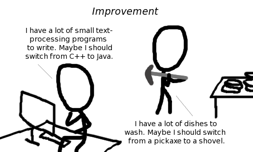

Comic JK 890
When I Feel Like It
⇤
<
?
>
⇥

⇤
<
?
>
⇥
Forum
.
RSS
.
Digg
.
Facebook
.
Reddit
.
Twitter
.
Stumbleupon
Enter your thoughts on number 890 here. Please, no spamming, trolling, phreaking, or python scripting. Well I guess the shovel would help scrape more than the pickaxe's simple SMASH RAGE >I appreciate your optimism! >>indeed [^_^] Neat, he's got a see-through monitor. I've been waiting forever for someone to start making those. >Really? http lmgtfy.com/?q=see-through+monitor </obnoxious> >>bhphotovideo.com/c/product/819915-REG/Orion_Images_22TPD_22_Transparent_LCD_Monitor.html >He's got a see through keyboard too. But perhaps most crazily, he's got a see through table...THAT HOVERS! And his chair is completely invisible. >> No, he's sitting on a blanket and he's put the keyboard down beside him. >>> Maybe he should switch from knee-typing to finger-typing... #!/usr/bin/perl -w > Strongly +1, that or /usr/bin/sed. >> /usr/bin/nano is the best. >>> For text processing? See you in your cubicle in the year 2634. > Eh, /bin/sh beats all. > awk, i.e. sed on steroids. Kernighan is not an idiot. Dibbles. >Dashie LALALALALALLALA Whooo <insert your favorite scripting language here>! > Whooo bash!